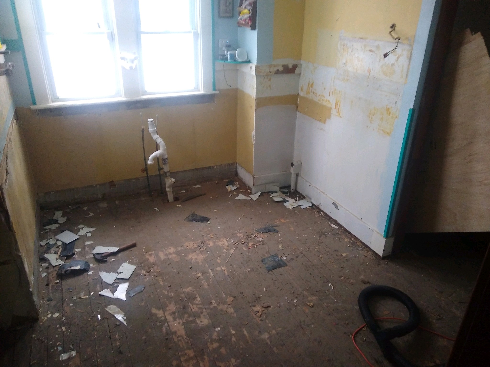
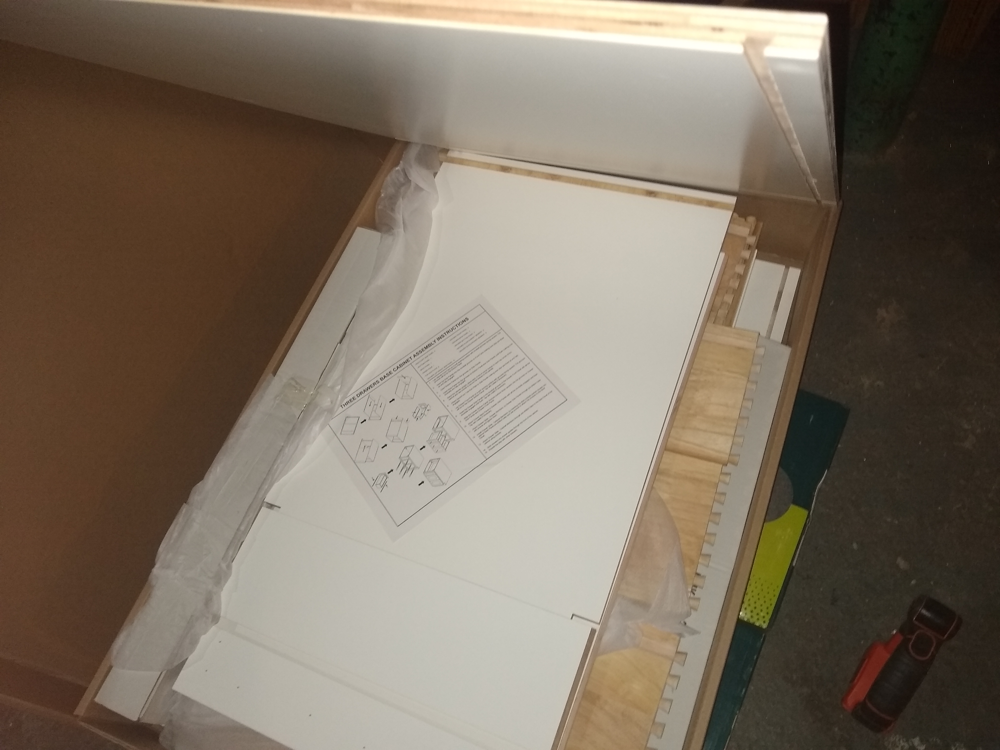
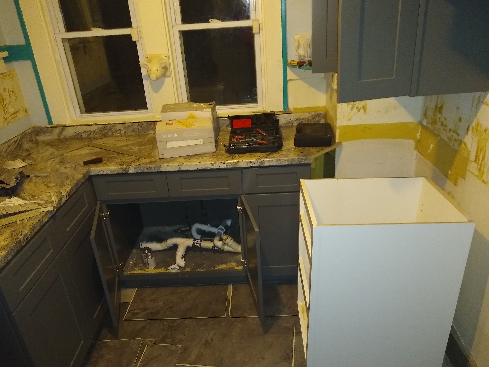
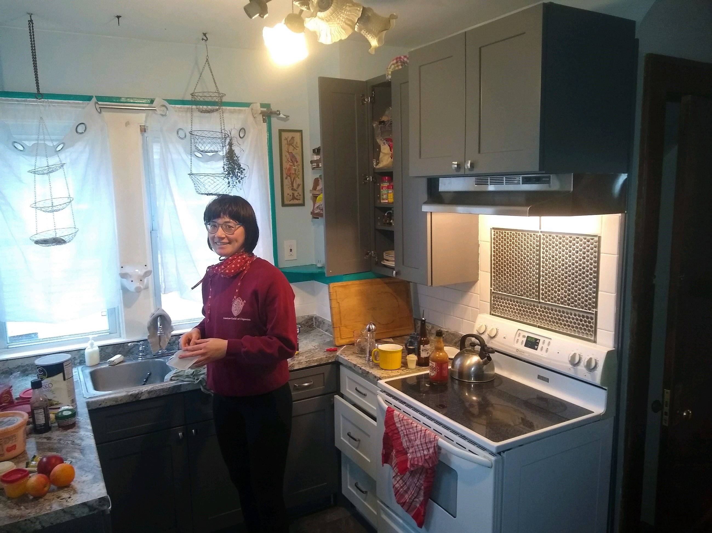

Posted on January 9, 2021
There was little to do during the Winter Holiday Break with COVID cases reaching new peaks, and so I decided to undertake a kitchen renovation. The real motivation, although, came from the YouTube vortex of DIY videos that I had been sucked into, along with, of course, the current state of our kitchen which had moldy cabinets and peeling laminate countertops.
I began with the demolition, relying on my trusty friend the crowbar. This might have been the most fun part. It only took about two days to relocate the appliances, remove the old cabinets and countertops, and rip up the flooring. Next it was on to reconstruction.
I started with getting the squeaks out of subfloor and creating a level surface. I used 2 1/2'' wood screws to screw down the floor along the floor joists, and I could literally hear the last squeaks coming out of that floor. Then I put down 1/4'' plywood just so I would have a smooth surface without holes to pour self levelling concrete over. The self levelling concrete turned out to be trickier to work with than I thought, and in hindsight I certainly should have chosen a product which set more slowly since I had no clue what I was doing. I ended up with floors that were probably only marginally more level than I had started with, but I decided to move on anyway, and just use shims to level the cabinets as I installed those.
Next was the cabinets. I used WholesaleCabinets.com to order cabinets online, and went with their Platinum Grey Shakers. This ended up working great; the cabinets were reasonably priced, easy to assembly, and of great quality (solid birch, soft close hinges, the whole nine yards). But then I hit a major hiccup. I opened one of the last cabinet boxes and found this:
It was a white cabinet. It was actually the exact cabinet I had ordered, but yes, in white. I quickly contacted the company to let them know the mistake, and thus began the laborious process of trying to get the correct cabinet (over a month later I actually still have not received the correct cabinet). I ended up assembling the white cabinet and putting it where the correct cabinet was supposed to go and it turned out not to look to bad:
After some convincing from my interior designer (my girlfriend Michaela) I decided the white cabinet would be a great accent cabinet. It matched the white tones of the subway tile backsplash I would put in and the stove it was adjacent to. I decided to screw it in and move on to the countertops and the flooring.
The countertops I got from Lowe's (along with the flooring, tiles, grout, and range hood, and much of the stuff I used for this project). I recommend Lowe's credit card which has no annual fee and gives 5% cash back when shopping at Lowe's. I went with the Cafe Azul Laminate countertops which actually look stunning; they look and feel like beautiful natural stone. My brother's first question when he walked in was "wow how much did those countertops cost?" The answer: only $400 for about 18 linear feet of countertop. For anyone who has bought countertops before, this was a great deal, and of course installing them myself saved even more money. For the flooring I went with Lowe's Chatham Stone Vinyl Plank, which is also a product I would highly recommend. This type of new tongue and groove vinyl plank flooring is super easy to install, and can go over most surfaces. Finally, I put up the subway tile backsplash and called it finished!
The whole project ended up costing around $3700 in materials, with the bulk of the cost actually being the kitchen cabinets (and they didn't even get the order right!). This was about what I expected, and probably about half the cost since I put everything in myself, save for the help of my girlfriend and roommate Theo in moving and hanging some of the heavier objects (Thanks Theo and Michaela!).
